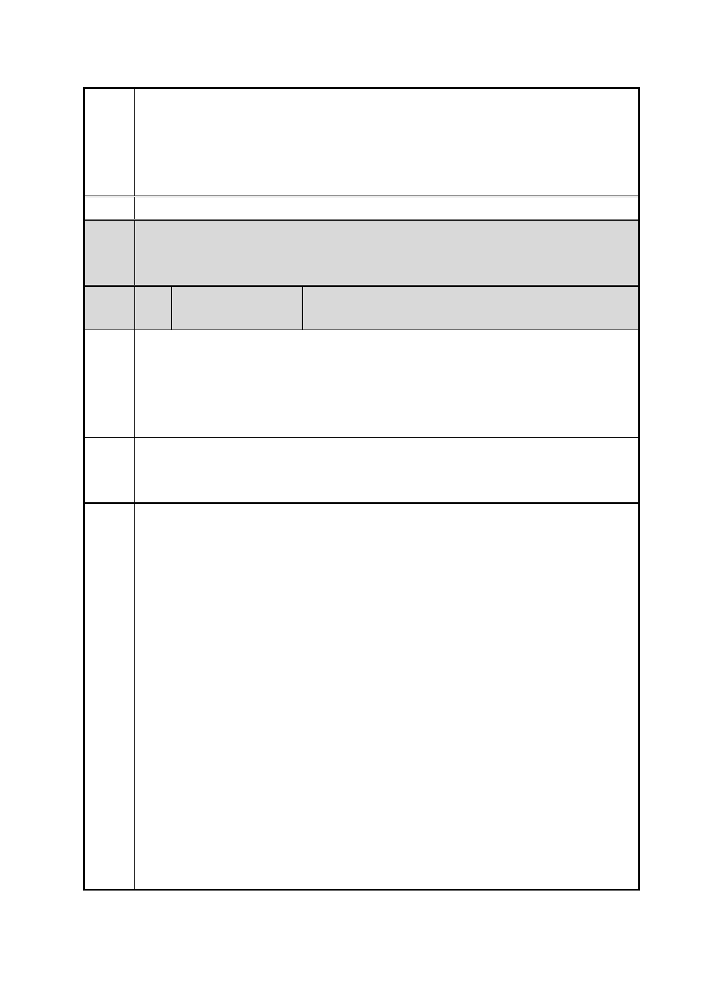

臺北市都市計畫委員會 公民或團體陳情意見綜理表
案
名
委員
會議
決議
編
號
陳情
理由
一
建議
辦法
一
陳情
理由
二
「變更臺北市信義區逸仙段二小段 33 地號等 21 筆土地（原臺北機廠）
工業區為創意文化專用區、特定專用區、道路及綠地用地主要計畫案」
及「擬定臺北市信義區逸仙段二小段 33 地號等 21 筆土地（原臺北機
廠）創意文化專用區、特定專用區、道路及綠地用地細部計畫暨劃定
都市更新地區計畫案」
六、有關臺北機廠再利用之定位，同編號 2 市府回應內容。
內容同編號 1。
25 陳情人
鄭○琳
細部計畫中新設於計畫區西側 15M 南北向道路
1.已破壞本計畫書第 27 頁附圖 1 文化資產保留範圍示意圖之黃色「鐵
道原址原貌復舊保留」之完整性。
2.並與計畫書第 11 頁六（三）重要工業地景（…全區軌道…）原地
保留為原則。互相衝突！
細部計畫區內道路劃設，應參考北廠基地內部暨有之服務道路位置與
寬度劃設。
依主要計畫第 25 頁所示，本案後續開發單位將分為台鐵（將另徵求
開發商）與台北市政府。此舉將使工業遺址之後續活化機能遭不可預
期之本位切割，恐對珍貴之文化資產所在場域造成無法復原各不同單
位間「合法本位」的破壞。
→開發單位分屬中央與地方，僅都市計畫（都市設計）層次之規定，
缺乏文化資產層次之統籌，文化資產指定單位台北市政府文化局在後
續活化層面上無法提供文化資產層次上之專業建議。
→北廠核心區域遭主要計劃先切割為兩種不同使用分區後，於細部計
畫再因開發需要以及道路而又被切割為特（一、二、四）。將使因開
發時程（主計第 25 頁分期分區辦理開發）、開發機能（細計第 8-9 頁）
與主辦單位…等之差異而造成古蹟或歷史建物空殼化，文化資產活化
缺乏整體規劃或監督單位必定減損文化資產的價值與未來性。
→如本案 102 / l 2 / 10 說明會上台鐵工會代表所言：「本案雖未達到
台鐵完全滿意，但後續可監督它。」實際上本案變更完畢後，後續將
沒有整合的單位能監督單一開發案對本基地文化資產的破壞或提出
整合性規劃建議。
→都市設計管制要點僅能針對都市空間層次提出管制，無法在文化資
產場所上提出要求，且都市設計委員是會因任期而變動的。
第 33 頁/共 154 頁